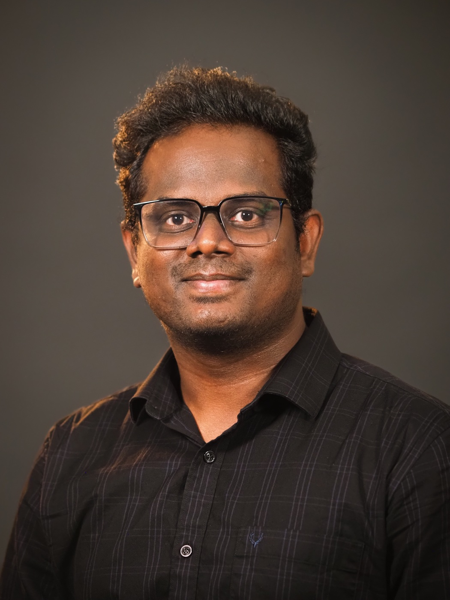

Bare-metal & RTOS
FreeRTOS and Zephyr. Tasks, drivers, interrupts, and the buses that connect them.
Firmware · Embedded · Real-time
I write firmware for small, battery-powered, sometimes life-critical devices.
Embedded firmware engineer working across ARM Cortex-M, BLE, RTOS, and edge ML. From the first peripheral interrupt to a production medical-device release.
Aurora, Colorado / Open to firmware & embedded roles

Firmware, medical devices & robotics
vTitan & Phoenix Medical Systems
Computer Engineering · CSU, 2026
Real-time human detection & tracking
About / Engineering approach
I like the layer where software meets a physical constraint: a flash page, a connection interval, a milliwatt.
My background is ARM Cortex-M firmware in C and C++, with wireless work on Nordic nRF52 and a focus on running machine learning at the edge. I bring hardware integration, methodical debugging, and verification into the same development loop.
FreeRTOS and Zephyr. Tasks, drivers, interrupts, and the buses that connect them.
GATT/GAP, secure pairing, and connection parameter tuning for reliable, efficient devices.
IEC 62304 workflows, requirements traceability, risk documentation, and firmware V&V.
TensorFlow Lite on STM32, plus perception and embedded systems on Jetson Nano and Raspberry Pi.
Experience / Signal path
Engineering work across connected medical devices, embedded interfaces, and autonomous systems.
Embedded Software Engineer
Embedded Engineer
Technical Engineer
Selected work / Featured case studies
From firmware and edge intelligence to digital logic. Select a project to explore its implementation.
Embedded machine learning
A heart murmur classification pipeline, from an LSTM model to real-time inference on an STM32 microcontroller.
OS / UART shell
A FreeRTOS-based command shell with a GPIO subsystem, shell commands, and task management on an STM32 Nucleo.
Signal processing
A physics-informed neural network for target tracking, compared with a constant-velocity Kalman filter.
CUSTOM LAYER · ARM TARGET · QEMU BOOT
Embedded Linux
A custom qemuarm image built in an Ubuntu ARM64 VM, with a dedicated meta-hello layer.
Technical skills / Pinout
A technical stack organized from application code down to the bench.
C · C++ · Embedded C · Assembly · Python · Verilog · SystemVerilog
ARM Cortex-M / Cortex-A · STM32 · Nordic nRF52 · NXP · ST/Dialog · PIC · AVR / ATmega · NVIDIA Jetson Nano · Raspberry Pi
Zephyr RTOS · FreeRTOS · Embedded Linux · Real-time systems · Low-power embedded design
SPI · I2C · UART · BLE · GATT/GAP · Secure pairing & bonding · LTE · MQTT
GPIO · ADC / DAC · Timers · DMA · Interrupts · Sensors · Low-power modes · Event-driven firmware
JTAG · GDB · Logic analyzers · Oscilloscopes · Multimeters · BLE sniffers · RF debugging · Waveform analysis
White-box unit testing · Integration, regression & stress testing · Python test automation · Firmware V&V · RTL simulation
FDA-regulated firmware development · IEC 62304 · Requirements traceability · Risk mitigation documentation
TensorFlow Lite · LSTM · Embedded Wizard · Qt · Git · Agile development
OpenWrt build system, package management & UCI · OpenSync Managers, OVSDB configuration & MQTT telemetry
Education / Foundations
Computer Engineering
Real-Time Operating Systems, Embedded Machine Learning, Low-Power Design, and Edge Computing.
GPA · 3.355Electrical and Electronics Engineering
A foundation in electrical and electronics engineering, carried into embedded firmware and connected systems.
Notes / From the workbench
Short project notes on implementation, validation, and the path from software to hardware.
The training, conversion, and deployment stages behind CardioClassifier.
Connecting packet-level evidence with peripheral and interrupt timing.
Simulation and waveform analysis across an ALU, AXI-Lite peripheral, and UART.
Contact / Make a connection
Open to firmware and embedded software roles.
Based in Colorado. Ready to talk engineering.